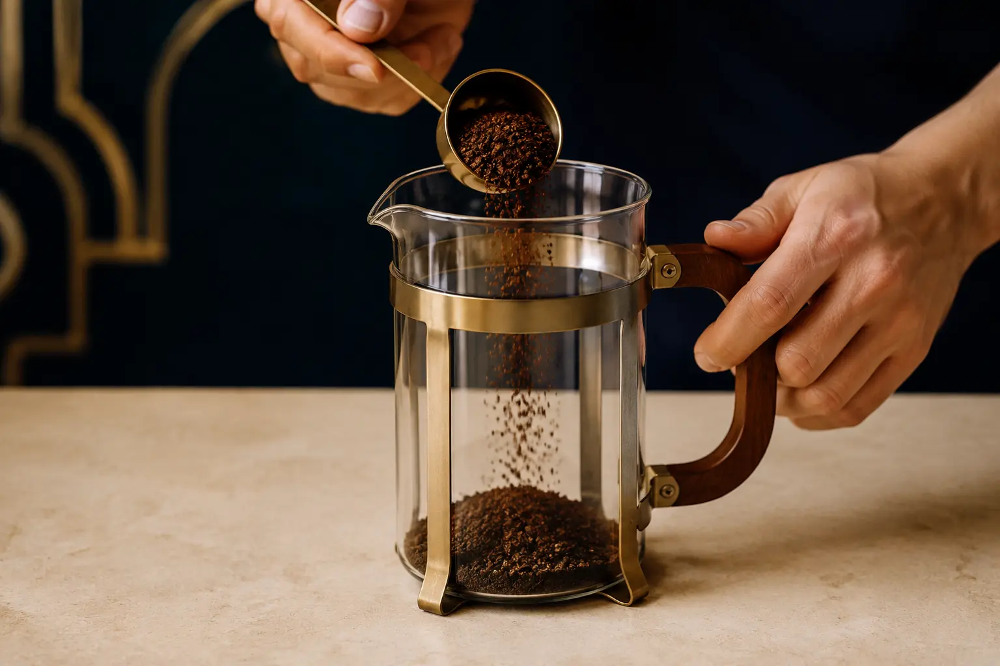
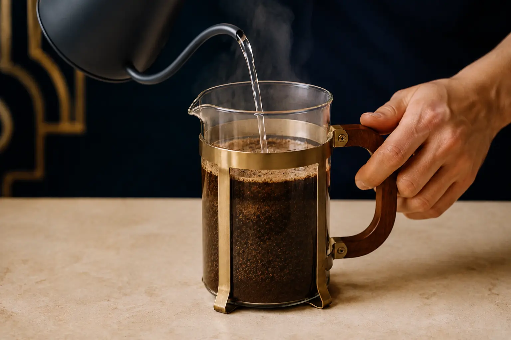
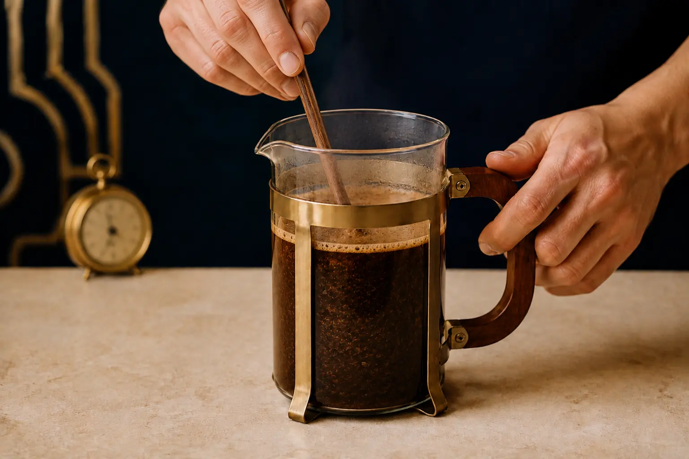
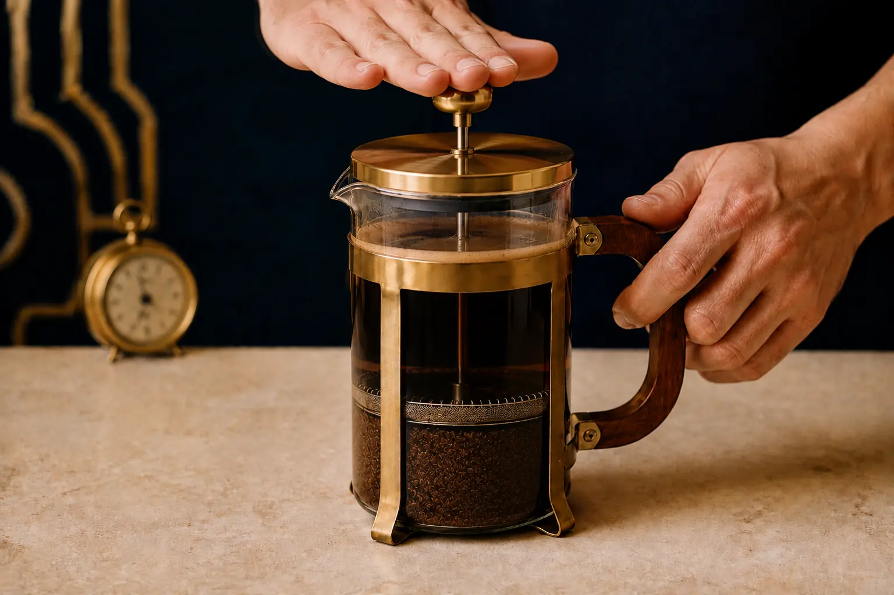
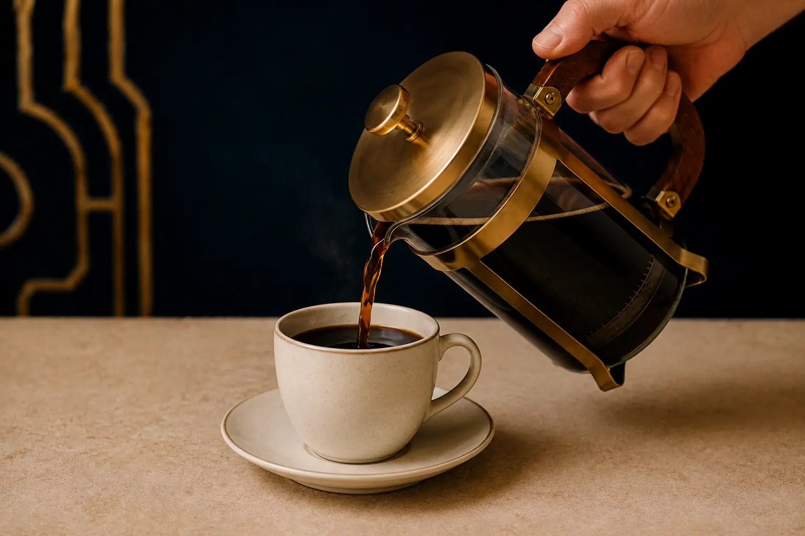

Step 01
Measure the coffee
Add about two level tablespoons of medium-coarse coffee for every eight ounces of water.

A deeper dark roast with a bold, full-bodied profile, made for the slow infusion and rich texture of the French press.
How to brewA four-minute immersion brings out the depth and body of this dark roast.

Add about two level tablespoons of medium-coarse coffee for every eight ounces of water.

Pour water just below boiling evenly over the grounds, ensuring all of the coffee becomes saturated.

Stir gently, place the lid on without pressing, and allow the coffee to steep for four minutes.

Hold the press steady and push the plunger straight down with slow, even pressure.

Pour all the coffee after pressing so it does not continue extracting over the grounds.
Serve black to experience the full body, or add a small amount of warm milk to soften the dark roast.
Explore the collection